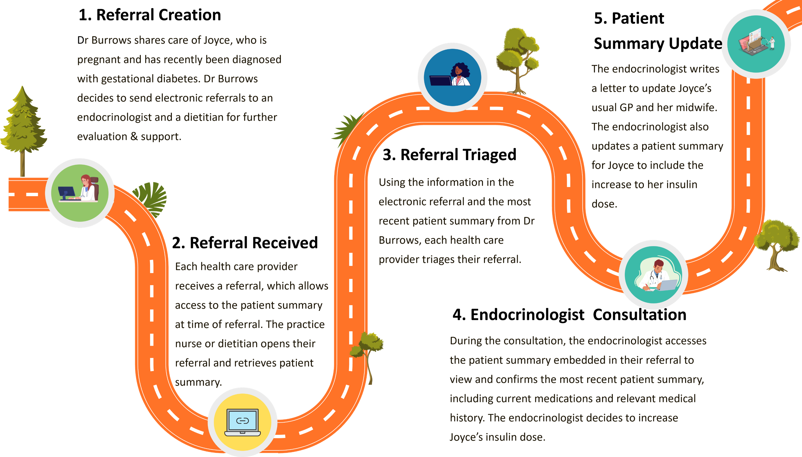

UK Patient Summary Implementation Guide
0.1.0-cibuild - CI Build
Unknown country code 'UK'
UK Patient Summary Implementation Guide
0.1.0-cibuild - CI Build
Unknown country code 'UK'
UK Patient Summary Implementation Guide, published by HL7 UK / INTEROPen. This guide is not an authorized publication; it is the continuous build for version 0.1.0-cibuild built by the FHIR (HL7® FHIR® Standard) CI Build. This version is based on the current content of https://github.com/freshehr/interopen-uk-fhir-ps/ and changes regularly. See the Directory of published versions
| Page standards status: Informative |
This example use case demonstrates a possible scenario where, during a specialist consultation, the specialist accesses the patient summary created at the time of the referral and confirms the latest patient summary available for a patient.
The example use cases in AU Patient Summary (AU PS) are provided for illustrative purposes only and are intended to support understanding of how patient summaries conformant to AU PS can be produced and consumed. While every effort has been made to provide useful examples, these use cases are not a normative part of the specification, nor are they fully representative of real world clinical workflows.
When reviewing clinical information such as an AU PS document, a clinician should use their clinical discretion as to the relevance of that information, as the AU PS document cannot be assumed to be complete or the most recent as it is relying on information from source systems and is not the system of record, or the system used in the creation of clinical data, rather a summary of data that can be used by a clinician as part of their clinical process to support and inform and individuals care/treatment.
Joyce Johnson, a 39-year-old woman from New South Wales, is pregnant and has recently been diagnosed with gestational diabetes. To provide Joyce with more comprehensive support, her regular general practitioner (GP), Dr Ginger Burrows, refers Joyce to both an endocrinologist and a dietitian.
As part of the referral, Dr Burrows includes an embedded patient summary that captures Joyce’s medical history and current medications at the time. This embedded summary is curated from Dr Burrows' clinical information system (CIS) and attested at the time of creation, ensuring its integrity and alignment with clinical standards.
The referral is received and triaged by both the endocrinologist (Dr Bryce Cruickshank) and the dietitian. When Joyce later attends her appointment with Dr Cruickshank, the endocrinologist's CIS alerts the provider that a more recent patient summary is available from an external source - in this case, Dr Burrows’ CIS.
Dr Cruickshank accesses and compares both the original embedded summary and the newer version to verify the currency and accuracy of Joyce’s clinical information. The more recent patient summary has been generated at the time of request for access by Dr Burrows' CIS and digitally signed to ensure integrity in transit.
Based on updated data - particularly around Joyce's medication regimen - Dr Cruickshank adjusts Joyce’s insulin dosage and documents the decision.
An updated treatment plan is then shared with Joyce and Dr Burrows to maintain continuity of care across providers.

Figure 1: Referral to Specialist and Allied Health consumer journey
This use case demonstrates use of patient summary during step 4. Endocrinologist Consultation of the Referral to Specialist and Allied Health consumer journey.
Figure 2: Sequence diagram showing access to embedded and updated patient summaries
The following examples demonstrate technical and clinical use case aspects, conforming to the AU Patient Summary requirements. Data within these examples, e.g. medications, is provided by the Sparked Patient Summary Clinical Focus Group:
IG © 2024+ HL7 UK / INTEROPen. Package hl7.fhir.uk.ps#0.1.0-cibuild based on FHIR 4.0.1. Generated 2026-02-15
Links: Table of Contents |
QA Report
| Version History |
 |
Propose a change
|
Propose a change